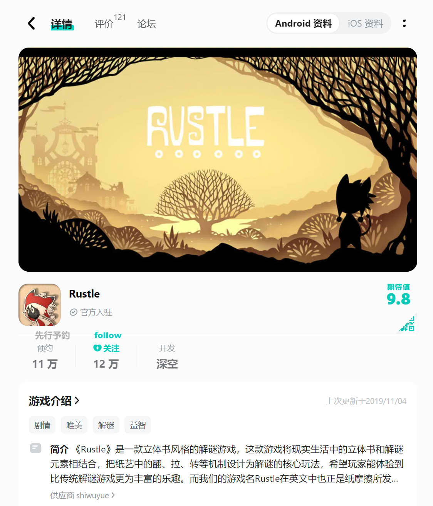
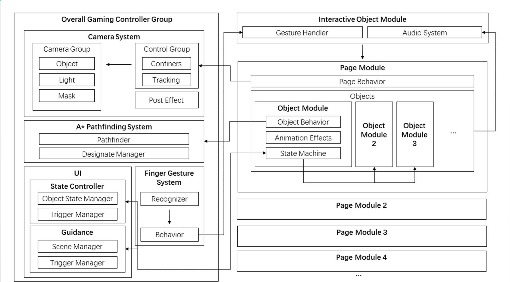

『Rustle』 は、立体書のスタイルを採用したユニークなパズルゲームで、現実世界の立体書とパズルの要素を組み合わせています。ゲーム内では、紙のアートを使っためくり、引っ張り、回転などのメカニクスがパズルの核心となり、従来のパズルゲームにはない、よりインタラクティブで豊かな体験を提供しています。ゲーム名『Rustle』は、紙がこすれる音を指し、このゲームの紙アートスタイルとダイナミックな特徴をうまく表現しています。
『Rustle』はリリース後、プレイヤーから熱烈な支持を受け、ランキングに入ることに成功し、最高で7位を記録しました。現在、中国のTaptapプラットフォームでは、ゲームの予約人数が11万人、フォロワーが12万人を超え、評価は9.8点を獲得しています。ゲームの独自性と高評価を受け、いくつかの企業から開発資金提供やゲームの買い取りに対する興味が示されました。しかし、時間の制約から、開発を続けることができませんでした。
ゲームのストーリーは、動物の王国に潜入しようとする少年の冒険を描いています。少年はなぜ動物に変装し、なぜ動物王国に入ろうとしているのでしょうか？彼は何を求めているのでしょうか？これらの謎はゲームを進める中で少しずつ解き明かされ、物語の層が次々と明らかになります。
それでも、『Rustle』は私たちのチームにとって非常に意味のある挑戦であり、革新的なパズルメカニクスと独自のアートスタイルが組み合わさったゲームで、プレイヤーに他にはない体験を提供しています。今後、機会があれば、ゲームの開発を続け、より多くのプレイヤーに届けたいと考えています。